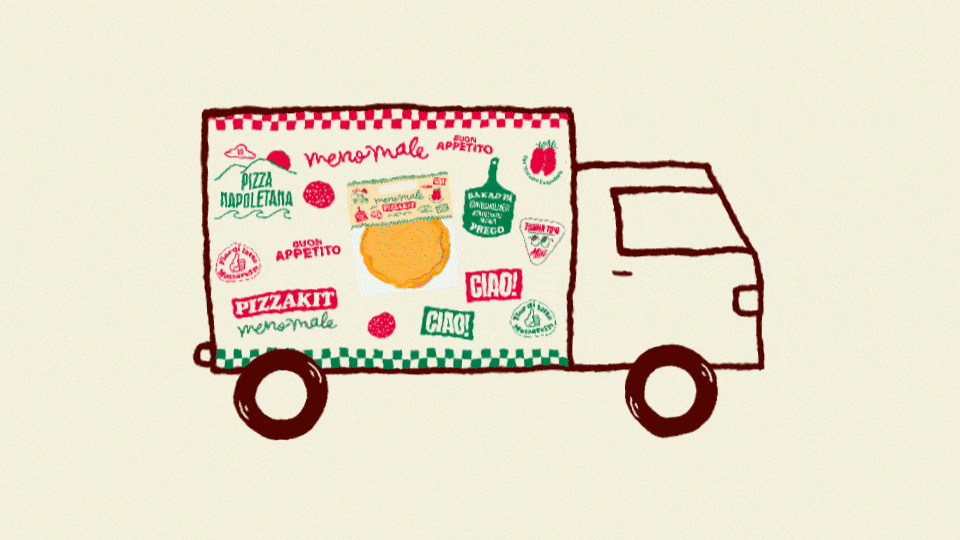

Meno Male
During my internship at Bsmart, I had the opportunity to lead this project together with two other interns. I was responsible for editing, animation, and co-planning the film alongside the producer intern. The film was shot by our photography intern. Our goal was to promote Meno Male's catering service by showcasing their delicious Italian food and the inviting atmosphere of their events. We aimed to create a warm, appetizing, and vibrant look that reflects the Meno Male brand.
We created a 24-second hero film in both 16:9 and 9:16 formats to promote Meno Male's catering service. In addition to the film, we delivered five still images with playful hand-drawn doodles to match the warm and vibrant feel of the brand. The result was a lively and visually engaging campaign that brought out the essence of Meno Male's Italian food experience.
Doodled Stills
Email Gif
